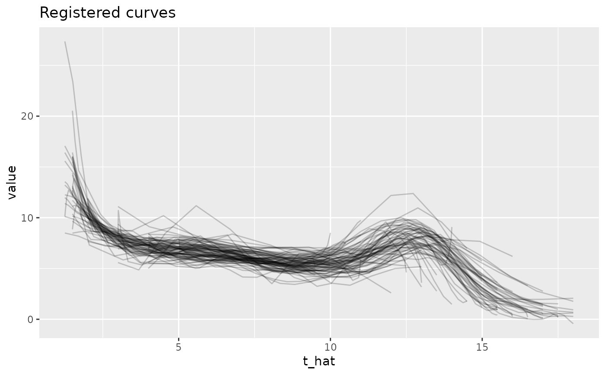

register_fpca.RdFunction combines constrained optimization and GFPCA to estimate warping functions for
exponential family curves. See argument family for which families are
supported. Warping functions are calculated by the function registr.
The GFPCA step can be performed either using the variational EM-based GFPCA
approaches of Wrobel et al. (2019) (fpca_type = "variationalEM", default)
or the mixed model-based two-step approach of Gertheiss et al. (2017)
(fpca_type = "two-step").
Warping functions by default are forced to start and end on the diagonal to be
domain-preserving. This behavior can be changed by setting
incompleteness to some other value than NULL and a reasonable lambda_inc value.
For further details see the accompanying vignette.
The number of functional principal components (FPCs) can either be specified
directly (argument npc) or chosen based on the explained share of
variance in each iteration (argument npc_criterion).
By specifying cores > 1 the registration call can be parallelized.
register_fpca(
Y,
Kt = 8,
Kh = 4,
family = "gaussian",
incompleteness = NULL,
lambda_inc = NULL,
Y_template = NULL,
max_iterations = 10,
npc = NULL,
npc_criterion = NULL,
fpca_type = "variationalEM",
fpca_maxiter = 50,
fpca_seed = 1988,
fpca_error_thresh = 1e-04,
fpca_index_significantDigits = 4L,
cores = 1L,
verbose = 1,
...
)| Y | Dataframe. Should have values id, value, index. |
|---|---|
| Kt | Number of B-spline basis functions used to estimate mean functions
and functional principal components. Default is 8. If
|
| Kh | Number of B-spline basis functions used to estimate warping functions h. Default is 4. |
| family | One of |
| incompleteness | Optional specification of incompleteness structure.
One of |
| lambda_inc | Penalization parameter to control the amount of
overall dilation of the domain.
The higher this lambda, the more the registered domains are forced to have the
same length as the observed domains.
Only used if |
| Y_template | Optional dataframe with the same structure as |
| max_iterations | Number of iterations for overall algorithm. Defaults to 10. |
| npc, npc_criterion | The number of functional principal components (FPCs)
has to be specified either directly as |
| fpca_type | One of |
| fpca_maxiter | Only used if |
| fpca_seed | Only used if |
| fpca_error_thresh | Only used if |
| fpca_index_significantDigits | Only used if |
| cores | Number of cores to be used. If |
| verbose | Can be set to integers between 0 and 4 to control the level of detail of the printed diagnostic messages. Higher numbers lead to more detailed messages. Defaults to 1. |
| ... | Additional arguments passed to registr and to the gfpca functions
(if |
An object of class registration containing:
The observed data plus variables t_star and t_hat which are the
unregistered grid and registered grid, respectively.
List of items from FPCA step.
Used exponential family.
List of the (warped) index values for each iteration.
Has 'convergence$iterations + 2' elements since the first two elements
contain the original (observed) index and the warped index values from the
preprocessing registration step (see Details), respectively.
List of inner knots for setting up the spline bases
for the inverse warping functions. Only contains NULL values for
Kh <= 4.
Matrix of B-spline basis coefficients used to construct the
subject-specific inverse warping functions. From the last performed
registration step. For details see ?registr.
List with information on the convergence of the joint
approach. Containing the following elements:
converged
Indicator if the joint algorithm converged or if not
(i.e., max_iterations was reached)
iterations
Number of joint iterations that were performed.
delta_index
Vector of mean squared differences between the (warped) index values
(scaled to [0,1] based on the size of the observed domain)
in the current and the previous iteration.
Convergence is reached if this measure drops below 0.0001.
registration_loss
Vector of the loss in each iteration of the algorithm.
Calculated in the registration step using the exponential family
likelihood with natural parameter from the FPCA step.
Has 'iterations + 1' elements since the first element contains the
loss of the preprocessing registration step (see Details).
Requires input data Y to be a dataframe in long format with variables
id, index, and value to indicate subject IDs,
observation times on the domain, and observations, respectively.
One joint iteration consists of a GFPCA step and a registration step.
As preprocessing, one initial registration step is performed.
The template function for this registration step is defined by argument
Y_template.
After convergence or max_iterations is reached, one final GFPCA step
is performed.
Julia Wrobel julia.wrobel@cuanschutz.edu Jeff Goldsmith ajg2202@cumc.columbia.edu, Alexander Bauer alexander.bauer@stat.uni-muenchen.de
### complete binomial curves
Y = simulate_unregistered_curves(I = 20, D = 200)
# estimation based on Wrobel et al. (2019)
reg = register_fpca(Y, npc = 2, family = "binomial",
fpca_type = "variationalEM", max_iterations = 5)
#> Running initial registration step
#> current iteration: 1
#> Running final FPCA step
# estimation based on Gertheiss et al. (2017)
reg2 = register_fpca(Y, npc = 2, family = "binomial",
fpca_type = "two-step", max_iterations = 5,
fpca_index_significantDigits = 4)
#> Running initial registration step
#> current iteration: 1
#> Using the first 2 FPCs which explain 64% of the (approximated) total variance.
#> Running final FPCA step
#> Using the first 2 FPCs which explain 64.5% of the (approximated) total variance.
if (requireNamespace("ggplot2", quietly = TRUE)) {
library(ggplot2)
ggplot(reg$Y, aes(x = tstar, y = t_hat, group = id)) +
geom_line(alpha = 0.2) + ggtitle("Estimated warping functions")
plot(reg$fpca_obj, response_function = function(x) { 1 / (1 + exp(-x)) })
}
# \donttest{
# example using accelerometer data from nhanes 2003-2004 study
data(nhanes)
nhanes_short = nhanes[nhanes$id %in% unique(nhanes$id)[1:5],]
reg_nhanes = register_fpca(nhanes_short, npc = 2, family = "binomial", max_iterations = 5)
#> Running initial registration step
#> current iteration: 1
#> Warning: BFPCA convergence not reached. Try increasing maxiter.
#> current iteration: 2
#> Warning: BFPCA convergence not reached. Try increasing maxiter.
#> Running final FPCA step
#> Warning: BFPCA convergence not reached. Try increasing maxiter.
### incomplete Gaussian curves
data(growth_incomplete)
# Force the warping functions to start and end on the diagonal
reg2a = register_fpca(growth_incomplete, npc = 2, family = "gaussian",
incompleteness = NULL, max_iterations = 5)
#> Running initial registration step
#> current iteration: 1
#> current iteration: 2
#> Warning: fpca_gauss convergence not reached. Try increasing maxiter.
#> Running final FPCA step
#> Warning: fpca_gauss convergence not reached. Try increasing maxiter.
if (requireNamespace("ggplot2", quietly = TRUE)) {
ggplot(reg2a$Y, aes(x = tstar, y = t_hat, group = id)) +
geom_line(alpha = 0.2) +
ggtitle("Estimated warping functions")
ggplot(reg2a$Y, aes(x = t_hat, y = value, group = id)) +
geom_line(alpha = 0.2) +
ggtitle("Registered curves")
}

# Allow the warping functions to not start / end on the diagonal.
# The higher lambda_inc, the more the starting points and endpoints are forced
# towards the diagonal.
reg2b = register_fpca(growth_incomplete, npc = 2, family = "gaussian",
incompleteness = "full", lambda_inc = 0.1,
max_iterations = 5)
#> Running initial registration step
#> current iteration: 1
#> current iteration: 2
#> Running final FPCA step
if (requireNamespace("ggplot2", quietly = TRUE)) {
ggplot(reg2b$Y, aes(x = tstar, y = t_hat, group = id)) +
geom_line(alpha = 0.2) +
ggtitle("Estimated warping functions")
ggplot(reg2b$Y, aes(x = t_hat, y = value, group = id)) +
geom_line(alpha = 0.2) +
ggtitle("Registered curves")
}
### complete Gamma curves
Y = simulate_unregistered_curves(I = 20, D = 100)
Y$value = exp(Y$latent_mean)
registr_gamma = register_fpca(Y, npc = 2, family = "gamma", fpca_type = "two-step",
gradient = FALSE, max_iterations = 3)
#> Running initial registration step
#> current iteration: 1
#> Using the first 2 FPCs which explain 99.6% of the (approximated) total variance.
#> Running final FPCA step
#> Using the first 2 FPCs which explain 99.8% of the (approximated) total variance.
# }